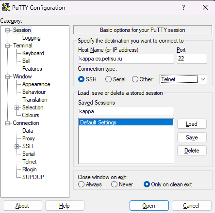
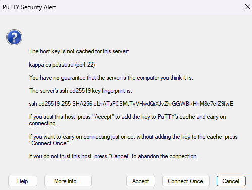
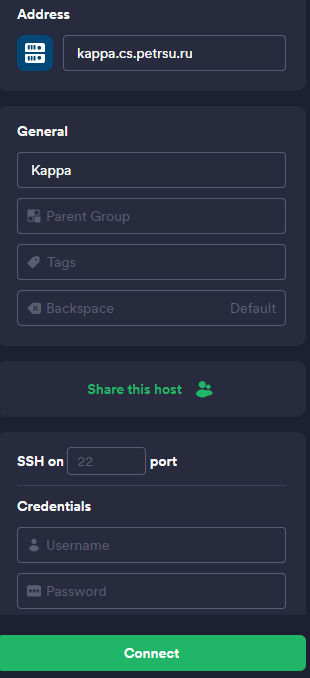
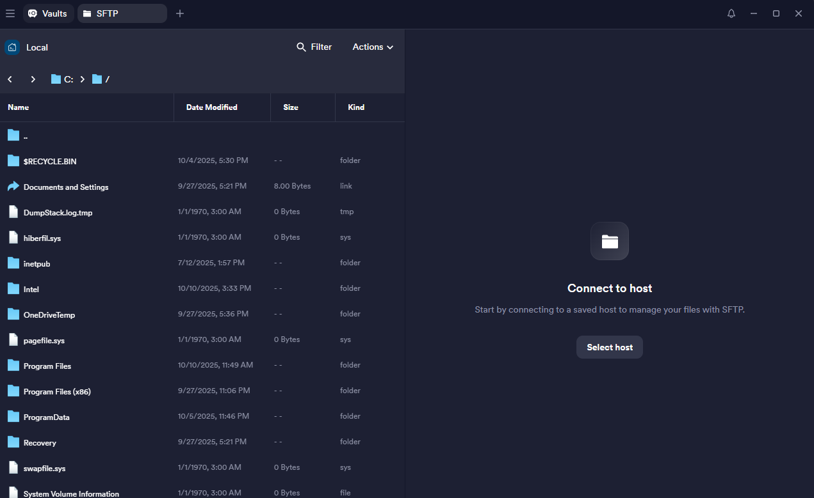

Hello, Students
Вводная
Выполнять лабораторные работы нам предлагается на дистрибутиве Linux OpenSUSE, в ходе конкретно этой лабы нам нужно создать программу на С которая просто выведет текст Hello, students! в консоль.
предоставленные фрагменты кода:
| main.c | |
|---|---|
| Makefile | |
|---|---|
Этапы выполнения
Создание директории лабы
изначально мы имеем следующую структуру директорий:
└── 📁 user
├── 📁 Видео
├── 📁 Документы
├── 📁 Загрузки
├── 📁 Изображения
├── 📁 Музыка
├── 📁 Общедоступные
├── 📁 Рабочий стол
├── 📁 Шаблоны
└── 📁 bin
нам же нужно создать новую директорию inf, перейти в неё и в неё создать ещё 1 директорию, task1. для этого нужно использовать команды mkdir и cd (ну или просто в проводнике правой кнопкой мыши - создать)
тут мы создали директорию inf, теперь нужно в неё перейти:
теперь мы находимся в директории inf, по аналогии создаём директорию task1 и переходим в неё:
Файлы программы
После того как мы создали все нужные директории нам необходимо создать сами файлы программы, main.c и Makefie
по итогу мы получаем следующую структуру директорий и файлов:
Теперь можно приступать к самому написанию программы, начнём с main.c, чтобы начать работу нужно его открыть через emacs:
после этого нужно написать код из вводной, но с некоторыми изменениями:
- строка 4: Заменить
First Lastна ваши имя и фамилию - строка 4: Заменить в адресе эл.почты
studentна ваш логин от kappa
после того как вы измените и напишите всё нужное файл можно сохранять, чтобы это сделать нужно использовать сочетание клавиш Ctrl+X, после чего нажать S. После этого emacs спросит нужно ли сохранять их, нажимаем Y и готово. можно переходить в файл Makefile, для этого зажимаем Ctrl+X после чего Ctrl+F, вводим Makefile. После этого откроется наш Makefile, в него также нужно написать код из вводной
Сборка программы и запуск
После того как все файлы созданы и код написан нужно скомпилировать программу и запустить её, для этого мы будем использовать make. вводим в консоль:
в директории программы появятся новые файлы:
Если make выдаёт ошибку
Для начала удостоверьтесь что вы находитесь в директории task1, если это так, но всё равно появляется ошибка, то удалите все табы в Makefile и проставьте их заново
чтобы запустить программу нужно ввести в консоль следующее:
программа выводит нужный текст в консоль, значит всё работает нормально
изменения в Makefile
нам нужно создать новую цель: indent. для этого открываем Makefile через emacs и добавляем эти строки:
теперь если мы введём в консоль make indent то наш исходный код в main.c будет отформатирован под стиль K&R
Подключение к Kappa
Для подключения к удалённому серверу Kappa через ssh нужно открыть консоль и прописать следующую команду:
после этого начнётся подключение и вы увидите вопрос, Are you sure you want to continue connecting (yes/no/[fingerprint])?, пишем yes и нажимаем Enter. Потом Kappa запросит ваш пароль, нужно тоже его ввести и нажать Enter
Важно
При вводе пароля набранные вами символы не отображаются, консоль не зависла, это сделано специально
Чтобы подключиться к Kappa через PuTTY, необходимо ввести адрес сервера (1), также для удобства можно дать название профилю и сохранить его, для этого нужно ввести название в поле ввода Saved sessions и нажать save. Чтобы подключиться нажимаем внизу open.
- kappa.cs.petrsu.ru

После того как мы начали подключение, PuTTY может выдать следующее сообщение:

Нажимаем accept, далее вводим свой логин и пароль кода запросят.
Важно
При вводе пароля набранные вами символы не отображаются, консоль не зависла, это сделано специально
Чтобы подключиться к Kappa через Termius нужно нажать new host, и в меню слева ввести данные. В Address указываем адрес сервера (1), в Label можете назвать подключение как хотите. В Credentials нужно ввести свой логин и пароль.
- kappa.cs.petrsu.ru

после этого нажимаем connect
Перенос файлов на удалённый сервер
Если вы работаете на комах в кабинете информатики под своим логином и паролем то можно не париться, та все файлы автоматически синхронизируются. Что касается других случаев то есть несколько способов
Самый простой в реализации метод, но в то же время и самый долгий. Для этого вам нужно подключиться по ssh к kappa, после чего создать там файлы и переписывать в консоли через emacs или другой редактор, например Vim
Перекинуть файл можно через команду терминала scp, её синтаксис выглядит следующим образом:
для того чтобы перекинуть файл main.c в директорию нашей лабы нужно выполнить следующее:
После выполнения данной команды файл будет отправлен по указанному пути
Важно
путь куда сохранять может отличаться в зависимости от пользователя. По дефолту вы находитесь в /home/01/логин, но это может отличаться. Чтобы избежать ошибок с этим следует подключиться к kappa по ssh и ввести команду pwd, она покажет текущую директорию, при подключении мы находимся в домашней, так что это то, что нужно
Это пожалуй самый простой и быстрый способ, когда вы на своём компе всё написали, нужно зайти в Termius и перейти на вкладку SFTP, и там нажать справа Select host.

Выбираем созданное раннее подключение, после чего как в обычном проводнике переходим в нужную директорию на сервере, левая половина это наши локальные файлы, ищем папку в которой вы всё делали, и после этого просто перетаскиваем файлы с левой половины на правую
Типичные ошибки
bash: gcc: command not found
GCC не установлен или не в PATH. На Kappa он должен быть.
Попробуйте which gcc. Если не помогает - помянем
make: *** No targets specified and no makefile found
Вы не в той директории. Проверьте через pwd — должны быть в task1/.
Также убедитесь что файл называется именно Makefile (с большой M)
Permission denied при запуске ./task1
Файл не имеет прав на выполнение. Выполните chmod +x task1 или
пересоберите через make clean && make
Возможные вопросы на сдаче
Что такое gcc?
Ответ
GCC это компилятор, с помощью которого мы из файлов с исходным кодом, который понятен человеку, сделать машинный код, который понятен компьютеру
что значат параметры которые мы передаём gcc?
Ответ
Флаг -g включает добавление отладочной информации в готовую программу, как если бы мы упаковывали какой то товар и клали туда инструкцию. Флаг -O0 отключает оптимизацию от компилятора. Флаг -c компилирует .с файл в объектный файл. Флаг -о задаёт имя файла программы который мы получаем на выходе
Что такое make?
Ответ
make это утилита автоматизации процесса сборки программы из исходного кода. Вместо того, что бы вводить кучу раз ряд команд, мы можем добавить цель, зависимость для неё, и сказать что нужно сделать
Что значат параметры которые мы передаём make indent?
Ответ
- Флаг -kr: задаёт стандарт оформления K&R (1)
- Флаг -nut: включает проверку правильности пробелов и табуляций
- Керниган и риччи
что значит строка '#include < stdio.h>'?
Ответ
Директива препроцессора #include говорит компилятору, что до этапа компиляции нам нужно вставить в это место содержимое некого заголовочного файла. <stdio.h> указывает на необходимый заголовочный файл, и т.к. это часть стандартной библиотеки С то название пишем в < >. stdio.h даёт нам доступ к стандартному вводу/выводу